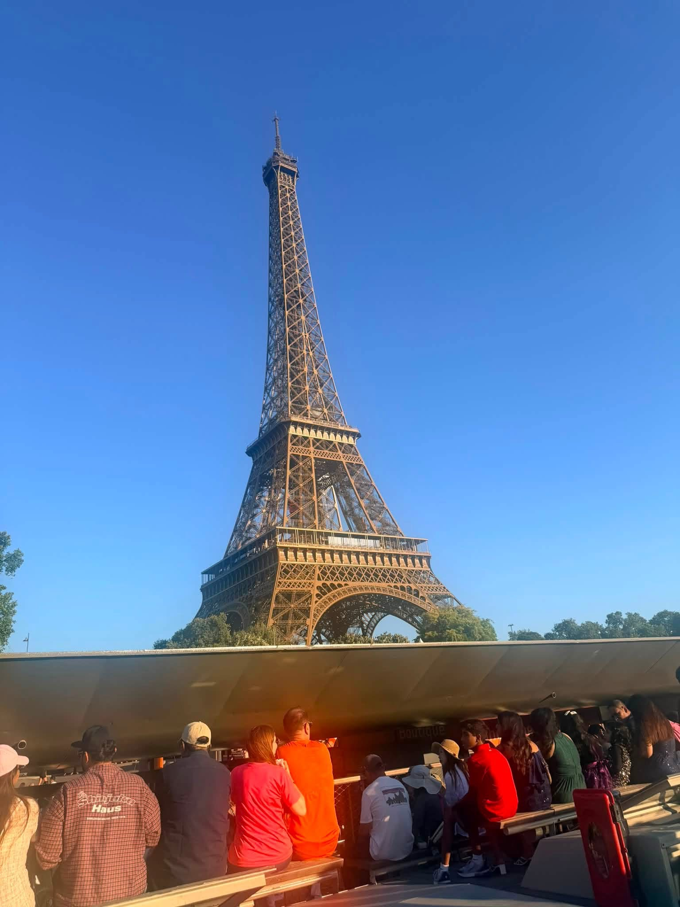

JULY 2026 • FRANCE
SUMMER IN FRANCE
This summer I had the chance to travel to France and experience Paris for the first time. Seeing the Eiffel Tower, Notre-Dame, the Louvre and Versailles in person was completely different from seeing them in pictures.
It was a chance to experience another country, learn some history and spend time with my family before getting back home and preparing for my freshman year.